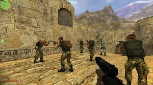

WELCOM CS.16

Counter-Strike, հայտնի է նաև ինչպես Half-Life: Counter-Strike կամ Counter-Strike 1.6
(հայերեն՛ Հակահարված,
Կես-Կյանք։ Հակահարված կամ Հակահարված 1․6), Valve ընկերության կողմից թողարկված բազմաօգտատեր հրաձգային խաղ առաջին
դեմքով, Microsoft Windows-ի համար։ Սկզբնական շրջանում Counter-Strike խաղը իրենից ներկայացնում էր Half-Life խաղի
ձևափոխված տարբերակը, որ մշակվել էր 1999 թվականին
Մինե Լեի և Ջեսսոմ Կլիֆֆի կողմից, հետագայում Valve-ն վարձեց
այս
երկու ծրագրավորողներին և նրանցից ձեռք է բերել խաղի ստեղծման իրավունքը,
և 2000 թվականին թողարկելով
Counter-Strike
խաղի ամբողջովին փոփոխված տարբերակը, արդեն ինչպես սեփական խաղը։ Խաղը տարբեր ժամանակներում թողարկվել է տարբեր
պլատֆորմների համար (macOS, Linux և Xbox)։

Խաղի նպատակը համարվում է պատանդների փրկումը հատուկ զորքերի համար և դրանց պահումը ահաբեկիչների
համար։ ՀԶ հաղթում
են այն դեպքում, երբ բոլոր պատանդները տեղափոխված են լինում փրկության գոտի, իսկ եթե դա տեղնի չի ունենում ապա
հաղթում են ահաբեկինչները։ ՀԶ-ի համար պադանդները ռադարի վրա պատկերվում են կապույտ կետով։ Պատանդի փրկության
դեպքում բոլոր խաղացողներին ուղղարկվում է ձայնային
հաղորթագրույուն՝ Hostage has been rescued, իսկ բոլոր
պատանդների փրկության դեպքում էկրանին հայտնվում է նամակ։ Որպեսզի պատանդը հետևի ՀԶ-ին, խաղացողը պետք է սեղմի Use
կոճակը։ Որպեսզի պատանդի դադարի հետևի նրան, նա պետք է ևս մեկ անգամ սեղմի այդ կոճակը։ Ի տարբերույթուն ահաբեկիչների
ՀԶ-նը կարող է հրել պատանդին։ Վատ է մտածված պատանդների վարքը,
նրանք չեն կարող կքանստել, բացել դուռ, ցատկել և
այլն։ Եթե պատանդը հետ է մնացել, ապա խաղացողը կարող է մոտենալ նրան և նորից սեղմել Use կոճակը։ Երբ ՀԶ-ինը
հայտնվում է փրկության գոտում ձախ մասում հայտնվում է «R» նշանը։